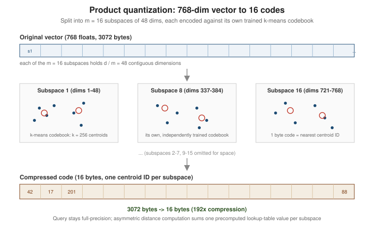

Quantization & Compression
|
This content was generated with the assistance of AI and should be verified against the official documentation before being relied on in production. |
Examples on this page target Python 3.12, FAISS 1.15.1, and pgvector 0.8.6. Every quantization scheme below trades a small amount of recall for a reduction in memory and, usually, faster distance computation; the goal is always to pick the smallest representation that still meets a recall target, not the smallest representation available.
Why vectors are memory-bound
A single float32 embedding of dimension d costs 4d bytes, and an ANN index adds graph or list overhead
on top of that (ANN Indexes: Flat, IVF, HNSW and Beyond derives HNSW’s per-vector memory formula
(d·4 + M·2·4) bytes). At 768 dimensions — the DocsAssistant scenario’s embedding size — a bare
float32 vector already costs 3,072 bytes, so 10 million chunks cost roughly 30 GB before any index
overhead. Vector search is therefore usually memory-bound, not CPU-bound: fitting the working set in RAM
(or in a smaller, faster storage tier) matters more than raw FLOP throughput, and it directly determines
which instance sizes and how many replicas a deployment needs.
Scalar quantization
The simplest lever is to store each component in fewer bits:
| Representation | Bytes per dimension | Notes |
|---|---|---|
|
4 |
Full IEEE-754 precision; the default in every engine unless configured otherwise. |
|
2 |
Half the memory, usually near-lossless recall for cosine/inner-product search. pgvector’s |
|
1 |
Requires a per-vector or per-collection scale/offset ( |
4-bit |
0.5 |
Aggressive; only a few engines expose it directly (e.g. as part of product or binary quantization below), since 4-bit scalar quantization alone loses too much precision for most embedding models. |
pgvector stores a halfvec column exactly like a vector column, just at half the size:
ALTER TABLE chunk_embeddings ADD COLUMN embedding_half halfvec(768);
UPDATE chunk_embeddings SET embedding_half = embedding::halfvec(768);
CREATE INDEX chunk_embeddings_hnsw_half
ON chunk_embeddings
USING hnsw (embedding_half halfvec_cosine_ops)
WITH (m = 16, ef_construction = 64);See pgvector: Half-precision vectors. FAISS
exposes scalar quantization as its own index family, IndexScalarQuantizer, with QT_8bit, QT_4bit, and
QT_fp16 quantizer types:
import faiss
d = 768
index = faiss.IndexScalarQuantizer(d, faiss.ScalarQuantizer.QT_8bit, faiss.METRIC_INNER_PRODUCT)
index.train(training_vectors) # learns per-dimension min/max
index.add(chunk_embeddings)Product quantization
Product quantization (PQ) compresses a vector far more aggressively than scalar quantization by learning a small codebook per subspace instead of a single scale per dimension.
Step by step
-
Split into subspaces. A
d-dimensional vector is cut intomequal contiguous subspaces ofd / mdimensions each. For a 768-dim embedding withm = 16, each subspace holds768 / 16 = 48dimensions. -
Train a codebook per subspace. For each subspace, k-means is run independently over the training vectors' sub-vectors in that subspace, producing
kcentroids (typicallyk = 256, so each centroid ID fits in one byte). This givesmcodebooks, each withkcentroids ofd / mdimensions. -
Encode. Each vector is replaced by
mcodes: for every subspace, the ID of the nearest centroid in that subspace’s codebook. Withk = 256, each code is one byte, so the whole vector compresses tombytes total, regardless of the originald. -
Distance computation is asymmetric (ADC, asymmetric distance computation): the query stays full-precision, but for each subspace the distance from the query’s sub-vector to every one of the
kcentroids is precomputed once into a small lookup table. Scoring a database vector then sumsmtable lookups (one per subspace) instead of computingdmultiplications directly, which is both cheaper and avoids quantizing the query itself (only the indexed vectors are quantized).
Memory arithmetic for 768 dimensions
| Representation | Bytes per vector | Compression vs. float32 |
|---|---|---|
|
768 x 4 = 3072 |
1x |
PQ, |
16 |
192x |
PQ, |
64 |
48x |
The codebooks themselves (m x k x (d / m) floats, e.g. 16 x 256 x 48 x 4 bytes ~ 786 KB for the whole
collection) are shared across every vector and amortize to nothing at scale, which is why PQ’s per-vector
cost is just m bytes.
FAISS IndexPQ and IndexIVFPQ
IndexPQ applies product quantization directly over a flat (exhaustive) scan; combining it with an IVF
coarse quantizer (ANN Indexes: Flat, IVF, HNSW and Beyond covers nlist / nprobe) adds a first
partitioning step so only a handful of inverted lists are scanned per query:
import faiss
d = 768
m = 16 # number of subspaces
nbits = 8 # bits per code -> k = 2**nbits = 256 centroids per subspace
# Flat PQ: exhaustive scan, PQ-compressed distances
index_pq = faiss.IndexPQ(d, m, nbits, faiss.METRIC_INNER_PRODUCT)
index_pq.train(training_vectors)
index_pq.add(chunk_embeddings)
# IVF + PQ: partition into nlist coarse cells, then PQ-encode within each
nlist = 64
quantizer = faiss.IndexFlatIP(d)
index_ivfpq = faiss.IndexIVFPQ(quantizer, d, nlist, m, nbits, faiss.METRIC_INNER_PRODUCT)
index_ivfpq.train(training_vectors)
index_ivfpq.add(chunk_embeddings)
index_ivfpq.nprobe = 8
# equivalently, built from a factory string:
index_ivfpq = faiss.index_factory(d, "IVF64,PQ16", faiss.METRIC_INNER_PRODUCT)index_factory("IVF64,PQ16") reads as: an IVF coarse quantizer with 64 lists, followed by product
quantization into 16 subspaces (nbits defaults to 8). See
FAISS wiki: The index factory and
FAISS wiki: Faster search.
Refinement and rescoring
Because PQ distances are approximate, FAISS can wrap a PQ index with IndexRefineFlat (or its IVF
equivalent), which over-fetches a larger candidate set using the fast PQ index and then re-scores exactly
those candidates against their full-precision vectors kept in a flat side index:
base_index = faiss.index_factory(d, "IVF64,PQ16", faiss.METRIC_INNER_PRODUCT)
base_index.train(training_vectors)
base_index.add(chunk_embeddings)
refine_index = faiss.IndexRefineFlat(base_index)
refine_index.k_factor = 4 # fetch 4x k candidates from the PQ index before exact rescoring
distances, ids = refine_index.search(query_vectors, k=10)See FAISS wiki: Pre- and post-processing. The same over-fetch-then-rescore shape reappears with binary quantization below and with cross-encoder re-ranking on Hybrid Search & Re-ranking.
Binary quantization plus rescoring
Binary quantization goes further still: each dimension collapses to a single bit (typically the sign of the
component), so a 768-dim vector fits in 768 / 8 = 96 bytes — a 32x reduction over float32 — and
similarity becomes a Hamming distance computable with a CPU population-count instruction, which is far
cheaper than a floating-point dot product. The recall cost is larger than PQ’s, so binary quantization is
almost always paired with a rescoring step against the original full-precision vectors.
pgvector exposes this as a bit expression index plus a two-step SQL query: quantize on the fly for the
index, then re-rank the shortlist by the exact vector operator:
-- expression index on the binary-quantized embedding
CREATE INDEX chunk_embeddings_binary_hnsw
ON chunk_embeddings
USING hnsw ((binary_quantize(embedding)::bit(768)) bit_hamming_ops);
-- over-fetch on the cheap binary index, then re-rank exactly; $1 is the query embedding
SELECT c.id, c.content
FROM (
SELECT ce.chunk_id, ce.embedding
FROM chunk_embeddings ce
ORDER BY binary_quantize(ce.embedding)::bit(768) <~> binary_quantize($1::vector)::bit(768)
LIMIT 200
) shortlist
JOIN chunks c ON c.id = shortlist.chunk_id
ORDER BY shortlist.embedding <=> $1::vector
LIMIT 10;See pgvector: Binary quantization. Qdrant’s binary quantization and Elasticsearch’s Better Binary Quantization (BBQ) follow the same over-fetch-and- rescore pattern, tuned into the engine’s own query path rather than hand-written SQL: Qdrant: Binary quantization and Elasticsearch: Better Binary Quantization (BBQ) (see also Vector Indexing & HNSW and kNN / HNSW vector search).
Dimensionality reduction
Quantization shrinks each component; dimensionality reduction removes components outright before any quantization happens at all.
PCA via IndexPreTransform
FAISS can prepend a trained PCA matrix to any index with IndexPreTransform, projecting each vector onto
its top principal components before it reaches the underlying index:
d_in, d_out = 768, 128
pca_matrix = faiss.PCAMatrix(d_in, d_out)
base_index = faiss.IndexFlatIP(d_out)
index = faiss.IndexPreTransform(pca_matrix, base_index)
index.train(training_vectors) # fits the PCA matrix, then trains base_index
index.add(chunk_embeddings)See FAISS wiki: Pre- and post-processing. PCA is learned from the training set’s variance, so it should be retrained whenever the embedding model or corpus distribution changes meaningfully.
Matryoshka truncation
Models trained with a Matryoshka representation objective (see Embeddings) keep the most informative signal in the leading dimensions by construction, so truncating the stored vector to a prefix — no PCA training, no codebooks, just slicing — already yields a usable, smaller embedding:
from sentence_transformers import SentenceTransformer
model = SentenceTransformer("mixedbread-ai/mxbai-embed-large-v1", truncate_dim=256)
embedding = model.encode("How do I speed up similarity search?", normalize_embeddings=True)See sentence-transformers: Matryoshka embeddings. Matryoshka truncation and PQ/binary quantization compose: a truncated 256-dim vector can still be product- or binary-quantized afterward for further savings.
Measuring the recall cost
None of these techniques are free, and the right amount of compression is whatever a measured recall@k
against an exact IndexFlatIP baseline can tolerate for a given workload (ANN Indexes: Flat, IVF, HNSW and Beyond
shows the same recall@k-vs-efSearch measurement for HNSW):
ground_truth = faiss.IndexFlatIP(d)
ground_truth.add(chunk_embeddings)
_, gt_ids = ground_truth.search(query_vectors, k=10)
_, candidate_ids = candidate_index.search(query_vectors, k=10)
recall_at_10 = sum(
len(set(gt_row) & set(cand_row)) / 10
for gt_row, cand_row in zip(gt_ids, candidate_ids)
) / len(query_vectors)See FAISS wiki: Faiss indexes for
IndexFlatIP, and Evaluating RAG Systems for recall@k as an evaluation metric.
Bytes-per-vector table
| Technique | Bytes per vector (768-dim) | Compression vs. float32 |
|---|---|---|
|
3072 |
1x |
|
1536 |
2x |
|
768 |
4x |
PQ, |
16 |
192x |
PQ, |
64 |
48x |
Binary (1 bit/dim) |
96 |
32x |
PCA to 128 dims ( |
512 |
6x |
Matryoshka truncation to 256 dims ( |
1024 |
3x |

In LangChain and Spring AI
Quantization is usually configured at the vector-store or index level rather than in application code, but both frameworks surface the knobs each store exposes.
LangChain
LangChain’s PGVector store (see
Integrating with
LangChain) has no quantization option: it stores a plain vector column and its queries use the exact
distance operator, so a halfvec or binary-quantized expression index built beside it would not be used by
its searches. The store where LangChain does let you pick a compressed index is FAISS, whose constructor
accepts any FAISS index — here the IVF64,PQ16 index from above, trained before any text is added:
import faiss
from langchain_community.docstore.in_memory import InMemoryDocstore
from langchain_community.vectorstores import FAISS
from langchain_community.vectorstores.utils import DistanceStrategy
from langchain_ollama import OllamaEmbeddings
pq_index = faiss.index_factory(768, "IVF64,PQ16", faiss.METRIC_INNER_PRODUCT)
pq_index.train(training_vectors) # L2-normalized float32 sample of DocsAssistant chunk embeddings
store = FAISS(
embedding_function=OllamaEmbeddings(model="nomic-embed-text"),
index=pq_index,
docstore=InMemoryDocstore(),
index_to_docstore_id={},
distance_strategy=DistanceStrategy.MAX_INNER_PRODUCT,
normalize_L2=True, # cosine via inner product on unit vectors
)
store.add_texts(["search_document: HNSW indexes trade recall for latency", ...])
hits = store.similarity_search("search_query: how do I speed up similarity search", k=5)See the official LangChain FAISS vector store page.
Spring AI
Spring AI’s PgVectorStore exposes the distance metric and index type as configuration
(spring.ai.vectorstore.pgvector.distance-type, spring.ai.vectorstore.pgvector.index-type), covered on
Integrating with Spring
AI, but has no quantization setting, and its queries would not use a binary expression index. A Spring
application that wants binary quantization plus rescoring therefore runs the SQL above itself, with Spring AI
only producing the query embedding:
@Repository
class BinaryQuantizedSearch {
private final JdbcClient jdbc;
private final EmbeddingModel embeddingModel;
BinaryQuantizedSearch(JdbcClient jdbc, EmbeddingModel embeddingModel) {
this.jdbc = jdbc;
this.embeddingModel = embeddingModel;
}
List<DocHit> search(String question) {
// pgvector accepts the "[0.1, 0.2, ...]" text form produced by Arrays.toString
String query = Arrays.toString(embeddingModel.embed("search_query: " + question));
return jdbc.sql("""
SELECT d.source_path, c.section_path, c.content,
1 - (shortlist.embedding <=> CAST(:query AS vector)) AS score
FROM (
SELECT ce.chunk_id, ce.embedding
FROM chunk_embeddings ce
ORDER BY binary_quantize(ce.embedding)::bit(768)
<~> binary_quantize(CAST(:query AS vector))::bit(768)
LIMIT 200
) shortlist
JOIN chunks c ON c.id = shortlist.chunk_id
JOIN documents d ON d.id = c.document_id
ORDER BY shortlist.embedding <=> CAST(:query AS vector)
LIMIT 10
""")
.param("query", query)
.query((rs, rowNum) -> new DocHit(
rs.getString("source_path"), rs.getString("section_path"),
rs.getString("content"), rs.getDouble("score")))
.list();
}
}See the official
Spring Framework
JdbcClient and Spring AI Embeddings Model
API pages.